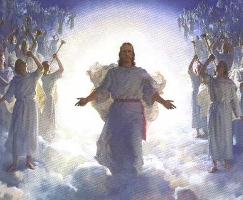
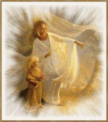
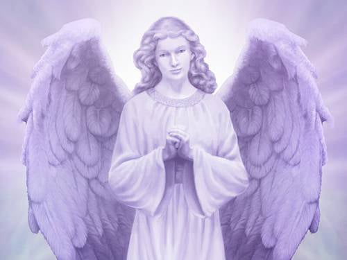

Preporuka za ovaj jedinstveni uređaj za zaštitu od tehničkih i drugih zračenja.
(Uređaj preporučuje i Spasoje Vlajić)

Anđeli,Arhanđeli i demoni nisu nikakva izmišljena bajka.To je nešto što definitivno postoji.Anđeli su uvek bili i ostali pozitivni,a lucifer i njegova kompanija demoni negativni.Neko očigledno pokušava da prikaže da postoje zli anđeli(posebno u Holivudskim filmovima) i eto kako su i oni prevrtljivi i mogu da pređu na ovu drugu stranu a zapravo se radilo o nečem drugom o čemu u nastavku.Anđeli su nešto najčistije što su pojedini ljudi uspeli i da vide i dožive na razne načine.Anđeli su desna ruka Boga,i Bog ih je pri stvaranju posebno izdvojio kao najpozitivnije duše koje će biti njegovi pomoćnici na raznim zadacima.Oni ne prolaze kroz živote i reinkarnacije kao ljudi.Odmah su dobili večni život.Na suprotnoj strani stvorene su i sile zla,a ono što se spominje “pali anđeli”,reč pad se odnosi da su pali kroz dimenzije jako nisko.Anđeli žive na najvišim dimenzijama koje su najbliže bogu,a demoni praktično na najnižim.Odnosno mi ljudi smo na 3d,a demoni koriste niže nivoe 4d i međudimenzionalne prostore,a njihovi pomoćnici na zemlji su negativni vanzemaljci,pa onda idu njihove razne sluge na samoj zemlji među ljudima.A sam đavo je nadređen ovim negativnim demonima 4d realnosti i on je za njih bog i on se nalazi na višim nivoima 4d realnosti ili nižim nivoima 5d gde je samo on i gde je stvorio zapravo iluziju 5d realnosti,i maksimalnog Ega po principu "pobednik može biti samo jedan".

Anđeli imaju različite zadatke,jedan od veoma bitnih je čuvanje međudimenzionalnih kapija,ali zato oni mogu da se kreću bez problema kroz sve dimenzije za razliku od ostalih niže rangiranih bića.Da nema anđela na zemlji bi zavladao stvarno pravi pakao,samo ljudi nisu svesni toga.Neki anđeli su poznati kao borci protiv zla za koje su i mnogi čuli kao Arhanđel Mihajlo koji je opet u još jednoj višoj hijerarhiji među anđelima i veoma je uspešan u toj borbi protiv demona,ali samo u skladu sa božijim planom.Anđeli mogu da rade samo sa božijim blagoslovom,ne rade ništa na svoju ruku.Nije on sam ali ima ih puno vrsta pa se neću puno baviti njihovim imenima i detaljnim opisima(to koga bude zanimalo neka čita knjige).Neki ove anđele nazivaju još i nebeska vojska ili vojska boga oca koji su najbliži samom bogu što ima opravdanja.Ovi anđeli se prvenstveno bore za to da pravda pobedi.Osim ovih postoje i mnogi drugi,recimo anđeli neverovatne snage koji se mogu uključiti i u fizički svet naše 3d stvarnosti,na primer neki veliki zemljotres se dešava a oni drže noseće stubove zgrada da se ne sruše,ili recimo često spašavaju ljude kod saobraćajnih nesreća ali pod uslovom da treba da preživite tu saobraćajku.Ne može ništa van plana da ide.Postoji onda druga vrsta koja će vam pomoći da lakše prođete kroz neke patnje u životu koje vam sleduju ali neki put zavisi i od ljudi,naročito od nivoa svesti.Što ste na višem nivou u ovom slučaju i pomoć će biti veća.Anđele kod teških bolesti možete i sami prizvati uz pomoć nekih tehnika(zavisi od osobe),oni će vam pomoći koliko smeju.U nekim slučajevima je bilo i trenutnih izlečenja gde su bolesti nestale bez traga.Mogu da se pojavljuju po potrebi i kao neke osobe na zemlji koje vam spasu glavu u datom momentu i onda nestanu bez traga.To retko rade jer im je malo problem da se manifestuju u 3d svet na ovaj način,ali bilo je zanimljivih slučajeva a i dosta filmova na tu temu.Obično koriste telepatske komunikacije ali kada dođu u 3d stvarnost mogu i da govore po potrebi.Osobe malo višeg nivoa svesti mogu i svesno da prihvataju ove poruke iz viših sfera.

Tu su i anđeli mudrosti koji vas uče,i vode ka duhovnom napredovanju.Ljudi uglavnom nisu svesni ovoga.Postoje onda i anđeli glasnici koji prenose poruke kako sa viših sfera koje su vam bitne za dalji život,ali i obrnuto do samog boga ako treba.Često komuniciraju i sa vašim duhovnim vodičima koji su ispod njihovog nivoa i odazivaju se na njihove pozive ako vam nešto zatreba.Često su u velikom broju prisutni na mestima velikih opasnosti za ljude,a primećeno je da tada i svest tih ljudi skače,i naravno pomažu na razne načine kako fizičkom zaštitom,tako i smirivanjem,telepatijom,mogu i trenutno bol da vam otklone jer mogu da vam izmenjaju ćelije na molekularnom nivou.Ukoliko je potrebno da se nekih teških iskustava tokom života ne sećate više u pravoj meri jer bi vam remetilo život mogu vam obrisati taj deo sećanja,kao i sećanja na prethodne živote(koga to muči).Često se nalaze na mestima gde ima puno bespomoćnih ljudi,invalida,a na decu posebno paze(da ne ulazim u detalje).Ljudima se obično prikazuju sa krilima jer ljudi tako očekuju da ih vide mada mogu da zauzimaju bilo koji oblik.Anđeli su inače bespolni,kao i mnoga druga bića na višim dimezijama.Znate onu priču “hiljadu anđela stane na vrh čiodine glave”.Da oni se na neki način igraju,mogu i to da rade ili da budu čovek od više metara.Anđeli imaju savršeno čistu auru i eterilčno telo i često zato neki opisuju da su videli oreol oko glave.Jako su radosna bića,puna ljubavi ali ne iskazuju toliko emocije.
Postoje i anđeli muzike, neki ih zovu i pevači.Ima ljudi koji mogu da čuju ovu muziku anđela koja je kažu nešto neopisivo za ljudski um u pozitivnom smislu.Naša klasična muzika čak i ona najbolja je kažu samo bleda slika i obično ti ljudi ceo život provedu slušajući tu muziku jer je neodoljivo privlačna kao i sve što stiže iz viših dimenzija.Ta muzika je inače i lekovita i koristi se i za lečenje po potrebi.Morate uzeti u obzir da oni nisu tu samo zbog Zemljana,svemir je ogroman sa beskonačno različitih života i nivoa postojanja.Oni svima njima služe i pomažu. Pomažu recimo i životinjama i samim planetama.Vode i evidenciju o svakom pojedincu i njegovim dobrim delima za života.Ono što je njihova važna uloga u današnjim vremenima ali i osnovni zadatak to je donošenje svetlosti na zemlju,rasterivanje tame i negativnih sila,donošenje više svesti,konačna pobeda dobra nad zlim i konačno uspostavljanje raja na zemlji i prelazak na viši nivo postojanja.Dok Arhanđeli predstavljaju viši ili najviši red anđela,nešto kao generali u odnosu na anđele kojima su i anđeli podređeni.Priča o anđelima je zanimljiva i beskrajna pa koga zanima detaljnije neka pročita u knjigama. Inače kao što sam već rekao postoje osobe i sve ih je više u svetu koje imaju direktnu komunikaciju sa Anđelima a neki ih pri tome mogu i videti.Takva jedna osoba je i sa naših prostora pa možete odgledati dole njena predavanja(delove predavanja) o iskustvima sa njima.

Što se tiče sila zla njihovu osnovnu hijerarhiju sam vam već opisao.Što se samih demona tiče oni obožavaju ovakve planete kao što je zemlja.Koriste uglavnom međudimenzionalne prostore tek nešto malo iznad ljudi i obožavaju sve oblike negativne energije.Koliko sam do sada zaključio mislim da demoni najviše od svega vole strah kod ljudi,to im baš puni baterije.Osim toga i Laž im je jako važna da što više ljudi verije u laž,tako da su uspeli da naprave ovaj naš matriks toliko lažnim da skoro da i nema više istine.Ljude doživljavaju kao baterije od kojih se napajaju isto kao što mi koristimo biljke i životinje u te svrhe.Demoni još vole i sve oblike ljudske patnje,tako da su često prisutni na mestima gde su ratovi,katastrofe,bolesti.A sve ovo im omogućavaju njihovi kuriri na zemlji koje sam već nabrojao gore,a oni najniže rangirani su političari.Za uzvrat im odbroje nešto para i statusne simbole na zemlji.Ali to ne znači da će njih da izleče ili spasu od nekih patnji,naprotiv i oni mora da se dokažu da rade za njih kroz razne sekte obično,tamo rade i neke mazohističke rituale da se dokažu da su oni prave sluge.Kažu da se čak ponekad i sam đavo u nekim oblicima pojavljuje u tim ritualima.Tamo se često žrtvuju životinje ali i deca i ljudi.Najviše ih nabavljaju iz afrike,kažu da može da se nabavi dete za 10ak dolara.Sile zla i demoni su prvobitno pušteni od boga i zamišljeni da održavaju iluziju fizičkog sveta(da ne ulazim u detalje kako),međutim oni su vremenom preuzeli vodeću ulogu u vođenju većine planeta kao što je naša na 3d najnižem nivou postojanja.Neki smatraju da su stvari izmakle kontroli ali ja mislim da nije baš tako.Bog ih je pustio jer ubrzavaju proces evolucije na ovom najnižem nivou postojanja za ljude tako što ljudi mogu da iskuse zlo i shvate šta je dobro.Da nije tako,proces evolucije bi trajao neverovatno dugo,a tako je i bilo nekada, tako da sam ja siguran da sve ide po planu.Demoni i njihovi pomoćnici vanzemaljskog porekla na zemlji su izuzetno lukavi i neki se pogrešno zanose da ih mogu logikom pobediti i to sa kapacitetom od 2% koji većina ljudi koristi.Postoje druge metode,bila bi to duga prilča ali recimo da ih smeh i to onaj iz dubina duše ozbiljno rasteruje i odbija.Zato komedije u novom svetskom poretku više nećete gledati ili samo na jako niskom nivou.To se smatra nepoželjnim(detaljnije u rubrici filmovi).Demoni su uvek tu kada počnete da radite pogrešne stvari u životu,a onda se još i nervirate.Oni su toliko lukavi,na primer da ste uradili nešto što se smatra uspehom na zemlji,recimo napravili ste neki veliki posao,zaposlili se u nekoj velikoj firmi,završili fakultet,uzeli kredit racimo za stan i td.,demoni za početak će vam dodati energiju za to da bi vas navukli da samo nastavite tako.I često ljudi kažu kao da su dobili krila,e to demoni rade ,a ne anđeli.A nakon toga kreće crpljenje vaše energije do besvesti kada se upustite u te poslove malo ozbiljnije(ne mogu sve da objasnim duga je priča),ali recimo da vas crpe dok ne obolite ili ako malo zastanete ili razmišljate da odustanete od toga oni će vam ponovo dati malo energije i vi ćete poleteti.Spuštaće vas postepeno sve niže dok vas ne patosiraju.Onda kreću razni psihijatri i spasioci sa onim znakom zmije na grudima(inače u africi ljudi zmije su demoni,oduvek ih tako zovu),tada vam uglavnom sa njivove strane više nema pomoći,uleteli ste u začarani krug i izlaza bez velikog ZNANJA nema.Đavo ili satana je njihov popularni gazda i oni njemu služe mada se međusobno baš ne podnose.Problem je što demoni u svojoj hijerarhiji ne mogu da napreduju jer će doći na nivo Satane koji ima najveći ego i po pricipu vladar može biti samo jedan poništava im duše.Tu nema ujedinjenja kao sa bogom.Demoni znaju to ili predosećaju i tako večito ostaju na tom nivou na kom su jer nemaju baš mnogo izbora.Ljudi koji su ih videli na nekim ritualima nisu mogli više normalno da žive ,kažu da ljudski um ni sam taj izgled ne može da prihvati,toliko su grozni.Inače njihov konačni cilj je suprotan težnjama anđela i to je da zavlada zlo u potpunosti i da njihova opcija prevlada u čitavom svemiru.Ta opcija se neće nikada desiti mada je bilo perioda u istoriji naše Galaksije recimo kada su držali pod kontrolom preko 90%.Sada je njihov odnos prema silama dobra pao na ispod 50% i očekuje se dalji pad.Problem je što sve više gube izvorišta energije pa su sve ratoborniji.Možete odgledati dokumentarac ispod ako budete uspeli do kraja pošto traje preko 3 sata,i saznaćete neke stvari kako demoni rade posao.Ne mogu vam garantovati da li ovaj lik što priča je lično to sve doživeo ali ono što je ispričao se stvarno dešava mnogima u tim sektama.I na kraju emisije su rečeni neverovatno precizni događaji koji će se dešavati u današnjim vremenima iako ovaj dokumentarac ima sigurno preko 30 godina.
Što se tiče samog Boga morate shvatiti da je to sve što postoji u svim vremenima,prostorima, dimenzijama , živo ili neživo i večno.Kažu da postoji neka jaka svetlost unutar boga koja predstavlja verovatno izvorište svega ali to je za ljudki um teško shvatljivo,pa nećemo dalje oko toga.Pričao je i Tesla o ovome.Već sam ionako odužio sve ovo.Za početak ako i ovo shvatite biće dobro.
Ovde možete napraviti manju ili veću kupovinu onoga što je na stranici knjige ,kontakt i porudžbine objašnjeno.Znači moguće su 2 vrste porudžbine :
1.Manja kupovina se tretira više kao donacija ali za uzvrat ipak dobijate jednu vrlo zanimljivu knjigu u pdf-u o Nikoli Tesli koja će vas oduševiti,spada u raritete i malo se zna o ovome.Vrlo poučna stvar.
2.Veća kupovina podrazumeva kompletan detaljan materijal o ovim temema sa sajta koji je objašnjen na stranici knjige ,kontakt i porudžbine i ima oko 50gb i nakon poručivanja možete preuzeti preko linka ili za one u Srbiji može i pouzećem.Za one koji plaćaju preko linka ispod, izaberite opciju 60 evra.To se podrazumeva da je ova porudžbina.Oni koji hoće pouzećem neka me kontaktiraju.
Prilikom procedure kupovine uloliko ste za manju kupovinu ili donaciju možete izabrati jedan od već ponuđenih iznosa ili jednostavno u polje gde piše iznos vi upišite svoj iznos po želji,a za veću porudžbinu kao što rekoh birate 60 evra opciju.Nakon završenog plaćanja bićete kontaktirani preko emaila u roku 24 časa i dobićete ili link za preuzimanje ako je veća porudžbina ili knjigu na email ako je manja.
Preporuka za ovaj jedinstveni uređaj za zaštitu od tehničkih i drugih zračenja.
(Uređaj preporučuje i Spasoje Vlajić)